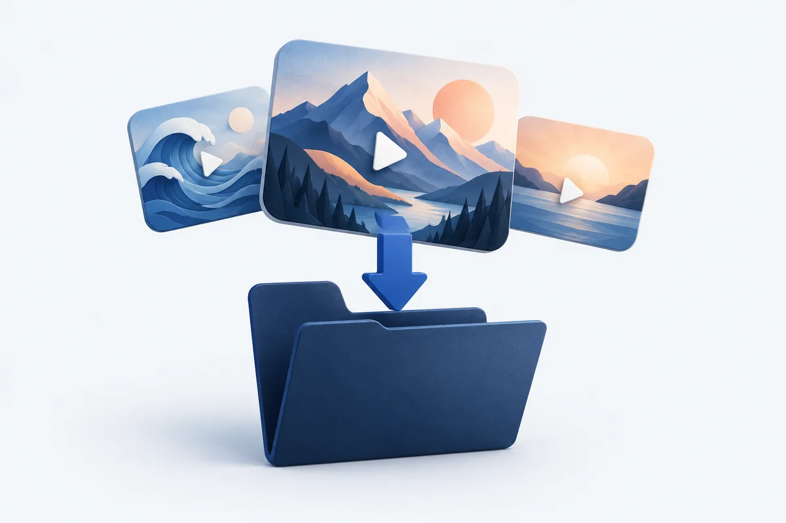

FROM YOUR BROWSER TO YOUR DEVICE
Save the videos you want to keep.
Find video sources on the page, choose one or several, and save supported files and streams to your computer.
Chrome Web Store edition · Chrome 111 or later · No helper required

Start with the page you're watching.
- Open and play a video. On X, refresh the page after updating the extension so it can find the player's media sources.
- Open Video Link Grabber. Click Rescan if the video has just loaded. Available sources show a preview, a readable name and download options.
- Save one, or select several. Click Download, or select the checkboxes and choose Download selected. Keep the queue and original page open until the downloads finish.
Batch selection, post-based filenames and the wider popup are included in the 1.3.3 update. Store availability depends on Google's review.
Know what can be saved.
Ordinary video files and file-backed blobs can be downloaded. Supported finite, unencrypted HLS streams are joined locally into MP4, including their audio. Stream assembly is limited to 512 MB of source media.
Playback recording is an optional fallback: it records from the current playback position in real time and may change quality. Live or encrypted streams, DASH assembly and protected playback are unsupported. Only save content you own or have permission to download.
Need a hand?
For a missing source, play the video and rescan. For an expired link, refresh the original page. Retry unfinished in a batch retries failed items without repeating completed downloads.